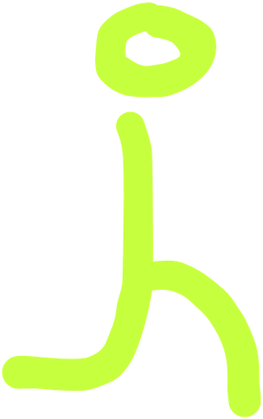
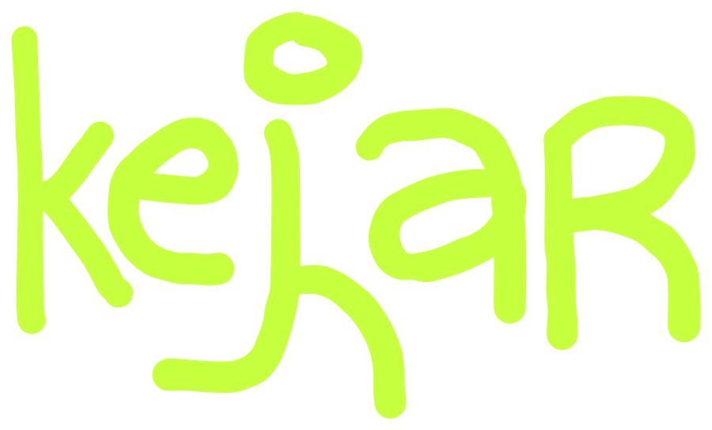

if dk how to play click here :)
Playable. The j spins and bounces around like the old DVD logo. Tap when it's in its gap between ke and ar and it snaps in, then turns into a random power-up for a moment before turning back into the j and spinning off. No score, no penalty; just something to play with.
The middle ground. The logo always reads kejar, with the j running on the spot in its gap like a screensaver. Tap anywhere above the buttons and it jumps, legs tucked, with the lime flash and a buzz, then lands back into its stride. No bouncing, no score, nothing to miss. Section 1 below is the old bouncing version, for comparison.
Tap anywhere above the buttons.


Today opening a game just shows "Loading..." in small grey text. Here the logo stays exactly where it was on home, the same 190 px, and only the j moves: it runs on the spot in its gap, legs crossing, until the game arrives. When it's in, the j sprints off to the right and the game screen comes in behind it (try the third phone). The blue dashed box is the same on both phones, to show the logo doesn't move or resize.
(the game screen)
Only on a fresh open. Lime screen, the logo in black with its gap empty. The j runs in from the left with the same stride, stops in its gap, and the colours flip: lime to black, black to lime. Then home's buttons come up. Entering a game is the reverse: the j runs off to the right.